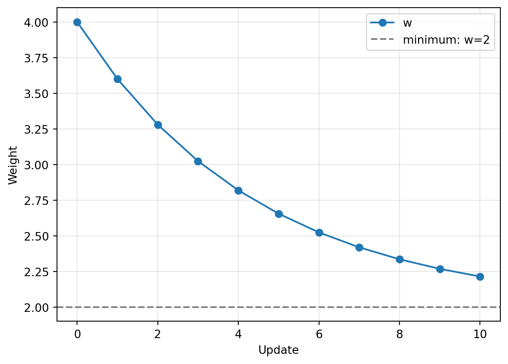

import torch
import matplotlib.pyplot as plt실습 3: 미분과 경사하강법을 코드로 구현하기

오늘 할 일 — 90분
이론에서 배운 기울기 계산 → 가중치 갱신 → 반복을 직접 구현한다. 이론과 같은 연습용 손실함수 \(J(w)=(w-2)^2\)로 시작해, 마지막에는 두 가중치를 함께 갱신한다.
각 절에서 함께 실행한 뒤, 값을 예상하거나 코드를 직접 작성한다. 시간에는 설명·작성·결과 확인이 모두 포함되어 있다. 해설은 노트북 끝에 있다.
| 시간 | 내용 |
|---|---|
| 0–15분 | 손실과 기울기 계산, 시작 위치를 바꾸는 연습 |
| 15–30분 | 기울기를 이용한 한 번의 갱신, 계산값 비교 |
| 30–50분 | SGD로 갱신, 반복문 직접 작성 |
| 50–65분 | 학습률에 따른 수렴·진동·발산 비교 |
| 65–85분 | 두 가중치의 편미분과 동시 갱신 |
| 85–90분 | 코드와 이론 연결·질문 |
대응 이론: Ch03 손실함수와 경사하강법. Colab 기본 CPU 런타임에서 위에서부터 실행한다. 그래프 코드는 제공한다.
1. 손실과 기울기를 코드로 구하기 — 15분
1.1 손실함수를 함수로 작성
이론에서 사용한 손실함수가 다음과 같다고 가정하자.
\[J(w)=(w-2)^2\]
가중치 w를 넣으면 손실을 돌려주는 함수 J를 작성한다. 파이썬의 ** 2는 제곱이다.
def J(w):
return (w - 2) ** 2
print("w=4의 손실:", J(4.0))
print("w=2의 손실:", J(2.0))w=4의 손실: 4.0
w=2의 손실: 0.0이 예제에서는 w=2일 때 손실이 0이다. 이제 다른 위치에서 출발해 그쪽으로 이동하는 방법을 구현한다.
1.2 자동미분으로 현재 위치의 기울기 계산
파이토치의 자동미분은 텐서로 계산한 과정을 이용해 기울기를 구한다. 다음 세 가지를 사용한다.
| 코드 | 의미 |
|---|---|
requires_grad=True |
이 텐서에 대한 기울기를 계산하도록 설정한다. |
loss.backward() |
손실 계산을 거슬러 기울기를 구한다. |
w.grad |
계산된 기울기가 저장되는 속성이다. |
w = torch.tensor(4.0, requires_grad=True)
loss = J(w)
loss.backward()
print("현재 가중치:", w.item())
print("손실:", loss.item())
print("기울기:", w.grad.item())현재 가중치: 4.0
손실: 4.0
기울기: 4.0.item()은 값 하나인 텐서를 파이썬 숫자로 꺼낸다. 손실과 기울기가 각각 4로 나온다. 이론의 \(J'(w)=2(w-2)\)에 4를 넣은 결과와 같다.
backward()는 기울기를 계산한다. 가중치는 아직 4다. 기울기가 양수이므로 손실을 줄이려면 가중치를 조금 줄여야 한다.
1.3 직접 해보기 ① — 시작 위치와 이동 방향
start를 0.0, 2.0, 4.0으로 바꾸며 아래 셀을 완성한다. 먼저 도함수로 기울기를 예상하고, 실행 결과와 비교한다.
start = 0.0
w = torch.tensor(start, requires_grad=True)
# ① J를 호출해 loss 계산
# ② backward로 기울기 계산
# ③ w.grad.item() 출력| 시작값 | 예상한 기울기 | 실행한 기울기 | 가중치를 늘릴까, 줄일까? |
|---|---|---|---|
| 0.0 | 직접 기록 | 직접 기록 | 직접 기록 |
| 2.0 | 직접 기록 | 직접 기록 | 직접 기록 |
| 4.0 | 직접 기록 | 직접 기록 | 직접 기록 |
2. 기울기를 이용해 한 번 갱신하기 — 15분
2.1 갱신식을 코드로 옮기기
기울기로 방향을 알았으므로, 학습률을 곱해 이동량을 정한다. 코드에서는 학습률을 lr로 쓴다.
\[w_{\text{새}}=w-\eta J'(w)\]
\(w=4\), 학습률이 0.1이면 새 가중치는 \(4-0.1\times4=3.6\)이다. 아래 갱신 코드와 대응시켜 본다.
w -= lr * w.grad이 코드는 현재 w에서 lr * w.grad를 뺀 값으로 갱신한다. 값을 갱신하는 연산은 with torch.no_grad(): 안에 작성한다. 들여쓴 부분은 미분을 위한 계산 기록에서 제외된다.
w = torch.tensor(4.0, requires_grad=True)
lr = 0.1
loss = J(w)
loss.backward()
with torch.no_grad():
w -= lr * w.grad
print("갱신한 가중치:", w.item())
print("갱신 후 손실:", J(w).item())갱신한 가중치: 3.5999999046325684
갱신 후 손실: 2.559999704360962가중치는 약 3.6, 손실은 약 2.56이다. 갱신 효과는 새 가중치로 J(w)를 다시 계산하여 확인한다.
2.2 직접 해보기 ② — 계산한 값과 실행값 비교
다음 두 경우의 기울기 → 새 가중치 → 새 손실을 먼저 계산한다. 그다음 2.1절 코드의 시작값과 lr을 바꾸어 확인한다.
| 시작값 | 학습률 | 현재 기울기 | 새 가중치 | 새 손실 |
|---|---|---|---|---|
| 0.0 | 0.1 | 직접 계산 | 직접 계산 | 직접 계산 |
| 4.0 | 0.5 | 직접 계산 | 직접 계산 | 직접 계산 |
각 경우마다 셀 전체를 실행해 지정한 시작값에서 출발한다. 두 번째 경우에는 한 번의 갱신으로 어디에 도달하는가?
3. SGD로 갱신하고 반복하기 — 20분
3.1 갱신을 맡길 도구 준비
torch.optim은 가중치를 갱신하는 도구를 모은 모듈이다. torch.optim.SGD를 기본 설정으로 사용하면 방금 작성한 갱신식을 적용한다.
optimizer = torch.optim.SGD([w], lr=0.1)[w]는 갱신할 텐서의 목록, lr은 학습률이다. 이렇게 만든 optimizer에서 두 메서드를 사용한다.
| 메서드 | 역할 |
|---|---|
optimizer.zero_grad() |
이전에 계산한 기울기를 지운다. |
optimizer.step() |
저장된 기울기와 학습률로 가중치를 갱신한다. |
파이토치는 기울기를 계산할 때 기존 값에 누적한다. 따라서 매번 지운 뒤 현재 위치의 기울기를 구한다.
w = torch.tensor(4.0, requires_grad=True)
optimizer = torch.optim.SGD([w], lr=0.1)
optimizer.zero_grad()
loss = J(w)
loss.backward()
optimizer.step()
print("갱신한 가중치:", w.item())
print("갱신 후 손실:", J(w).item())갱신한 가중치: 3.5999999046325684
갱신 후 손실: 2.5599997043609622.1절처럼 가중치 3.6, 손실 2.56이 나온다. 이제 이 네 줄을 반복하면 된다.
3.2 새 위치에서 다시 계산하며 반복
아래 코드는 start에서 시작해 steps번 갱신한다. 반복할 때마다 바뀐 w로 손실과 기울기를 다시 계산한다.
history에는 시작값과 매번 갱신한 가중치를 저장한다. append()는 리스트 끝에 값을 추가한다.
start = 4.0
lr = 0.1
steps = 10
w = torch.tensor(start, requires_grad=True)
optimizer = torch.optim.SGD([w], lr=lr)
history = [w.item()]
for step in range(steps):
optimizer.zero_grad()
loss = J(w)
loss.backward()
optimizer.step()
history.append(w.item())
print(step + 1, "회: 가중치", round(w.item(), 4), "손실", round(J(w).item(), 4))1 회: 가중치 3.6 손실 2.56
2 회: 가중치 3.28 손실 1.6384
3 회: 가중치 3.024 손실 1.0486
4 회: 가중치 2.8192 손실 0.6711
5 회: 가중치 2.6554 손실 0.4295
6 회: 가중치 2.5243 손실 0.2749
7 회: 가중치 2.4194 손실 0.1759
8 회: 가중치 2.3355 손실 0.1126
9 회: 가중치 2.2684 손실 0.0721
10 회: 가중치 2.2147 손실 0.0461round(값, 4)는 출력할 숫자를 소수 넷째 자리까지 반올림한다. 처음 두 번의 결과는 이론의 계산과 같다.
| 갱신 횟수 | 가중치 | 손실 |
|---|---|---|
| 0 | 4.0 | 4.0 |
| 1 | 3.6 | 2.56 |
| 2 | 3.28 | 1.6384 |
3.3 직접 해보기 ③ — 반대편에서 출발하는 반복문
이번에는 0.0에서 시작해 학습률 0.1로 10번 갱신한다. 아래 셀에 텐서와 optimizer를 만들고 반복문을 작성한다. 먼저 작성한 뒤 3.2절과 비교한다.
# ① 시작값이 0.0인 텐서 w와 optimizer 준비
# ② for 문 안에 학습 코드 네 줄 작성
# ③ 마지막 가중치와 손실 출력가중치는 어느 방향으로 움직이는가? 4.0에서 출발한 경우와 비교하여, 두 경우 모두 2에 가까워지는지 확인한다.
4. 학습률에 따른 움직임 비교하기 — 15분
4.1 이동 경로 그리기
반복문을 만들었으므로, 이번에는 학습률이 움직임에 어떤 영향을 주는지 확인한다. 3.2절에서 start=4.0, steps=10으로 두고 lr만 바꾸어 셀 전체를 실행한다. 이어 아래 제공 코드로 가중치의 이동을 그린다.
plt.plot(history, "o-", label="w")
plt.axhline(2.0, color="gray", linestyle="--", label="minimum: w=2")
plt.xlabel("Update")
plt.ylabel("Weight")
plt.legend()
plt.grid(alpha=0.3)
plt.show()
가로축 0은 시작 위치이고, 점선은 이 손실함수를 최소로 만드는 w=2다.
4.2 직접 해보기 ④ — 수렴·진동·발산
학습률을 0.1, 1.0, 1.1로 바꾸어 각각 실행하고 기록한다. 매번 같은 시작값에서 출발해야 비교할 수 있다.
| 학습률 | 10회 후 가중치 | 10회 후 손실 | 가중치의 움직임 |
|---|---|---|---|
| 0.1 | 직접 기록 | 직접 기록 | 직접 기록 |
| 1.0 | 직접 기록 | 직접 기록 | 직접 기록 |
| 1.1 | 직접 기록 | 직접 기록 | 직접 기록 |
다음 내용을 그래프와 연결해 설명한다.
- 어떤 경우에 가중치가 2에 가까워지는가?
- 어떤 경우에 두 위치를 오가며 손실이 그대로인가?
- 기울기의 반대 방향으로 갱신했는데도 손실이 커지는 이유는 무엇인가?
5. 두 가중치의 편미분과 동시 갱신 — 20분
5.1 두 편미분값을 한 번에 계산
이론 11절의 손실함수로 확장하자.
\[J(w_1,w_2)=(w_1-2)^2+(w_2-1)^2\]
두 가중치를 하나의 텐서 w에 담는다. w[0]은 첫 가중치 \(w_1\), w[1]은 두 번째 가중치 \(w_2\)다. 이를 이용해 손실함수를 작성한다.
def J2(w):
return (w[0] - 2) ** 2 + (w[1] - 1) ** 2이번에는 w.grad에도 두 값이 저장된다. 각각의 가중치를 바꿀 때의 손실 변화율이며, 이론의 기울기 벡터다.
w = torch.tensor([4.0, 0.0], requires_grad=True)
loss = J2(w)
loss.backward()
print("손실:", loss.item())
print("기울기 벡터:", w.grad)손실: 5.0
기울기 벡터: tensor([ 4., -2.])현재 위치 \((4,0)\)에서 손실은 5, 기울기 벡터는 \((4,-2)\)다. 손실을 줄이려면 첫 가중치는 줄이고 두 번째 가중치는 늘려야 한다.
5.2 같은 위치의 기울기로 함께 갱신
SGD에는 앞에서처럼 [w]를 전달한다. w 안에 값이 두 개 있으므로 step()이 두 가중치를 함께 갱신한다.
w = torch.tensor([4.0, 0.0], requires_grad=True)
optimizer = torch.optim.SGD([w], lr=0.1)
optimizer.zero_grad()
loss = J2(w)
loss.backward()
optimizer.step()
print("새 가중치:", w.tolist())
print("새 손실:", J2(w).item())새 가중치: [3.5999999046325684, 0.20000000298023224]
새 손실: 3.1999998092651367.tolist()는 텐서의 여러 값을 파이썬 리스트로 꺼낸다. 이론에서 계산한 \((3.6,0.2)\), 손실 3.2가 나오는지 확인한다. 두 기울기는 모두 갱신 전 위치 \((4,0)\)에서 계산한 값이다.
5.3 직접 해보기 ⑤ — 두 가중치를 반복해서 갱신
주석을 학습 코드 네 줄로 바꾸어 두 번 갱신한다. 손실함수는 J2를 사용한다.
w = torch.tensor([4.0, 0.0], requires_grad=True)
optimizer = torch.optim.SGD([w], lr=0.1)
for step in range(2):
# ① 이전 기울기 지우기
# ② J2로 손실 계산
# ③ 기울기 계산
# ④ 가중치 갱신
pass # 네 줄을 작성한 뒤 삭제
print(step + 1, "회:", w.tolist(), "손실:", J2(w).item())| 갱신 횟수 | 예상 가중치 | 예상 손실 |
|---|---|---|
| 1 | \((3.6,0.2)\) | 3.2 |
| 2 | \((3.28,0.36)\) | 2.048 |
값을 확인한 뒤 반복 횟수를 20번으로 늘린다. 첫 가중치는 2에, 두 번째 가중치는 1에 가까워지는지 확인한다.
6. 코드와 이론 연결하기 — 5분
오늘 구현한 경사하강법의 핵심은 다음 네 줄이다.
optimizer.zero_grad() # 이전 기울기 초기화
loss = J(w) # 현재 위치의 손실
loss.backward() # 현재 위치의 기울기
optimizer.step() # 기울기의 반대 방향으로 갱신가중치가 두 개일 때도 같은 순서로 계산했다. 기울기를 구하는 줄과 실제 값을 바꾸는 줄을 구분하고, 학습률을 바꾸는 위치를 짚어 본다.
신경망 학습에서는 [w] 대신 model.parameters()로 모델의 가중치와 편향을 전달하고, 예측과 정답으로 손실을 계산한다. 다음 실습 4에서는 이 과정을 실제 데이터에 적용한다.
직접 해보기 해설 — 먼저 작성한 뒤 확인
① 시작 위치와 이동 방향
loss = J(w)
loss.backward()
print(w.grad.item())| 시작값 | 기울기 | 이동 방향 |
|---|---|---|
| 0.0 | -4 | 가중치를 늘린다. |
| 2.0 | 0 | 갱신해도 그대로다. 이 함수의 최솟점이다. |
| 4.0 | 4 | 가중치를 줄인다. |
② 한 번의 갱신
| 시작값 | 학습률 | 현재 기울기 | 새 가중치 | 새 손실 |
|---|---|---|---|---|
| 0.0 | 0.1 | -4 | 0.4 | 2.56 |
| 4.0 | 0.5 | 4 | 2.0 | 0.0 |
두 번째 경우에는 이 함수의 최솟점에 한 번에 도달한다.
③ 반대편에서 출발하는 반복문
w = torch.tensor(0.0, requires_grad=True)
optimizer = torch.optim.SGD([w], lr=0.1)
for step in range(10):
optimizer.zero_grad()
loss = J(w)
loss.backward()
optimizer.step()
print("마지막 가중치:", w.item())
print("마지막 손실:", J(w).item())가중치는 약 1.7853, 손실은 약 0.0461이다. 4.0에서 출발하면 가중치는 약 2.2147이고 손실은 같다. 서로 반대편에서 2에 가까워진다.
④ 학습률 비교
| 학습률 | 10회 후 가중치 | 10회 후 손실 | 움직임 |
|---|---|---|---|
| 0.1 | 약 2.2147 | 약 0.0461 | 2에 수렴한다. |
| 1.0 | 4.0 | 4.0 | 4와 0을 오간다. |
| 1.1 | 약 14.3835 | 약 153.35 | 최솟점의 양쪽을 오가며 멀어진다. |
학습률이 크면 한 번의 이동이 너무 커져 최솟점을 지나칠 수 있다. 현재 위치에서 손실을 줄이는 방향이라도 멀리 이동하면 손실이 늘어날 수 있다.
⑤ 두 가중치의 반복 갱신
반복문 안의 네 줄은 다음과 같다.
optimizer.zero_grad()
loss = J2(w)
loss.backward()
optimizer.step()20번 갱신하면 가중치는 약 \((2.0231,0.9885)\), 손실은 약 0.000665가 된다. 두 가중치가 함께 \((2,1)\)에 가까워진다.